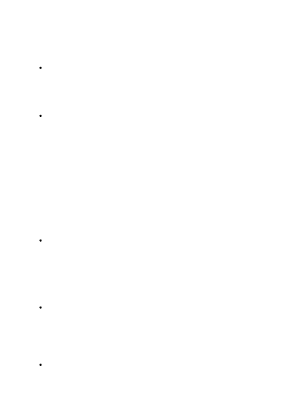

mitigation techniques are outlined in the section Evaluating and integrating Azure
Show and tell when designing prompts. With text and code models, make it clear
to the model what kind of outputs you expect through instructions, examples, or a
combination of the two. If you want the model to rank a list of items in
alphabetical order or to classify a paragraph by sentiment, show it that's what you
want.
Keep your application on topic. Carefully structure prompts and image inputs to
reduce the chance of producing undesired content, even if a user tries to use it for
this purpose. For instance, you might indicate in your prompt that a chatbot only
engages in conversations about mathematics and otherwise responds "I'm sorry.
I'm afraid I can't answer that." Adding adjectives like "polite" and examples in your
desired tone to your prompt can also help steer outputs. With image models, you
might indicate in your prompt or image input that your application generates only
conceptual images. It might otherwise generate a pop-up notification that explains
that the application is not for photorealistic use or to portray reality. Consider
nudging users toward acceptable queries and image inputs, either by listing such
examples up front or by offering them as suggestions upon receiving an off-topic
request. Consider training a classifier to determine whether an input (prompt or
image) is on topic or off topic.
Provide quality data. With text and code models, if you're trying to build a
classifier or get the model to follow a pattern, make sure that there are enough
examples. Be sure to proofread your examples—the model is usually smart enough
to see through basic spelling mistakes and give you a response, but it also might
assume this is intentional and it could affect the response. Providing quality data
also includes giving your model reliable data to draw responses from in chat and
question answering systems.
Measure model quality. As part of general model quality, consider measuring and
improving fairness-related metrics and other metrics related to responsible AI in
addition to traditional accuracy measures for your scenario. Consider resources
like this checklist when you measure the fairness of the system. These
measurements come with limitations, which you should acknowledge and
communicate to stakeholders along with evaluation results.
Limit the length, structure, and rate of inputs and outputs. Restricting the length
or structure of inputs and outputs can increase the likelihood that the application
will stay on task and mitigate, at least in part, any potentially unfair, unreliable, or
offensive behavior. Other options to reduce the risk of misuse include (i) restricting
Best practices for improving system performance